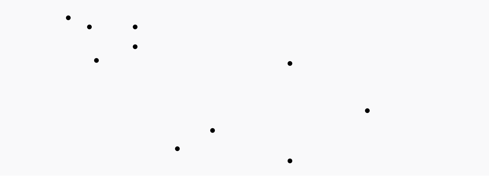
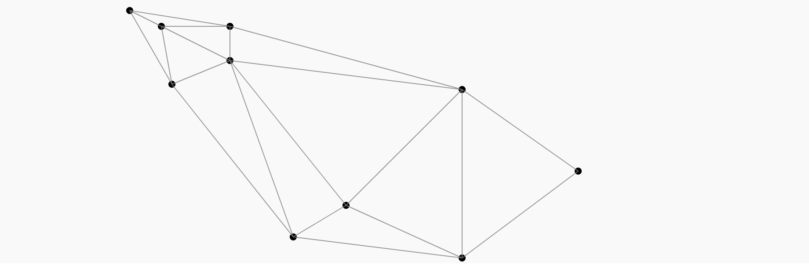
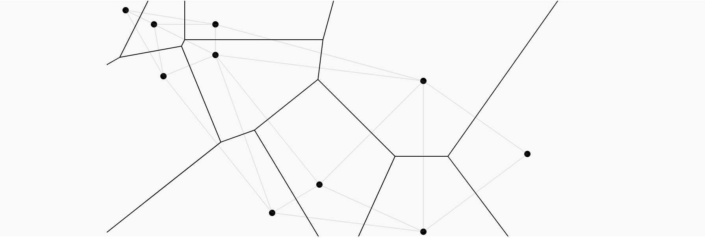

Voronoi Treemaps are methods of visualizing hierarchical data, where each cell represents a portion of the data and the hierarchy is encoded by the nesting of cells within each other. Unlike traditional Treemaps, Voronoi Tree Maps do not use rectangles to represent the data, but rather use arbitrary polygons to represent the data. This allows for a more organic and natural representation of the data.
This is a Traditional Treemap. Notice how the rectangles are used to represent the data. This can lead to a more rigid and less organic representation of the data.
This is a Voronoi Treemap representing the GDP of countries in asia. Notice how the polygons are used to represent the data. As you can see the data seems to have a more organic and natural representation.
In order to create a simple Voronoi treemap using D3.js, follow these steps:
Set up the HTML structure with an SVG container where the treemap will be rendered.
<svg id="simpleVoronoi"></svg>
The <svg> element with the ID "simpleVoronoi"
serves as the container for the Voronoi treemap.
Import the D3.js library by adding the following script tag just before your custom script:
<script
src="https://d3js.org/d3.v7.min.js"></script>
This script tag imports the D3.js library from the official CDN, making D3.js functionalities available in your project.
Define constants for SVG dimensions, data, and necessary variables. Initialize the Voronoi treemap by calling functions to set up data, layout, and drawing.
const HEIGHT = 500;
const WIDTH = 960;
const HALF_WIDTH = WIDTH / 2;
const HALF_HEIGHT = HEIGHT / 2;
// Define your data array here
const data = [
{ name: "China", weight: 46.0, color: "#ffffcc" },
{ name: "Japan", weight: 18.32, color: "#ffcc99" },
{ name: "India", weight: 8.77, color: "#ffcccc" },
{ name: "South Korea", weight: 5.77, color: "#ff99cc" },
{ name: "Russia", weight: 5.58, color: "#ffccff" },
{ name: "Indonesia", weight: 3.6, color: "#cc99ff" },
{ name: "Turkey", weight: 3.01, color: "#ccccff" },
{ name: "Saudi Arabia", weight: 2.7, color: "#99ccff" },
{ name: "Iran", weight: 1.77, color: "#ccffff" },
{ name: "Thaïland", weight: 1.64, color: "#99ffcc" },
{ name: "UAE", weight: 1.55, color: "#ccffcc" },
{ name: "Hong Kong", weight: 1.3, color: "#ccff99" },
];
// Initialize SVG container
const svg = d3.select("#simpleVoronoi")
.attr("width", WIDTH)
.attr("height", HEIGHT);
const TREEMAP_RADIUS = Math.min(HALF_WIDTH, HALF_HEIGHT);
const _voronoiTreemap = d3.voronoiTreemap();
let hierarchy, circlingPolygon;
const fontScale = d3.scaleLinear();
function init(rootData) {
initData();
initLayout();
hierarchy = d3.hierarchy({ children: rootData }).sum((d) => d.weight);
_voronoiTreemap.clip(circlingPolygon)(hierarchy);
drawTreemap(hierarchy);
}
init(data);
This block of code initializes constants, sets up the SVG container, and prepares data and layout for the Voronoi treemap.
Constants like HEIGHT and WIDTH define the
dimensions of the SVG container. Data, such as country names,
weights, and colors, are stored in the data array. The
init function initializes the treemap by calling other
functions to set up data, layout, and drawing.
Define functions to initialize data and layout settings for the treemap.
function initData() {
circlingPolygon = computeCirclingPolygon();
fontScale.domain([3, 20]).range([8, 20]).clamp(true);
}
function computeCirclingPolygon() {
return [
[0, 0],
[WIDTH, 0],
[WIDTH, HEIGHT],
[0, HEIGHT],
];
}
function initLayout() {
const drawingArea = svg.append("g").classed("drawingArea", true);
const treemapContainer = drawingArea.append("g").classed("treemap-container", true);
treemapContainer
.append("path")
.classed("world", true)
.attr("transform", `translate(${-TREEMAP_RADIUS}, ${-TREEMAP_RADIUS})`)
.attr("d", `M${circlingPolygon.join(",")}Z`);
}
These functions initialize data and layout settings for the treemap, including the circling polygon and font scale.
The initData function calculates the circling polygon
and sets the font scale based on the provided data. The
computeCirclingPolygon function calculates the vertices
of the circling polygon, while the initLayout function
sets up the SVG container and draws the circling polygon.
Create a function to draw the Voronoi treemap based on the provided data and layout.
function drawTreemap(hierarchy) {
const leaves = hierarchy.leaves();
const cells = svg.select(".treemap-container")
.append("g")
.classed("cells", true)
.selectAll(".cell")
.data(leaves)
.enter()
.append("path")
.classed("cell", true)
.attr("d", (d) => `M${d.polygon.join(",")}z`)
.style("stroke", "black")
.style("stroke-width", "10px")
.style("fill", (d) => d.data.color);
const labels = svg.select(".treemap-container")
.append("g")
.classed("labels", true)
.selectAll(".label")
.data(leaves)
.enter()
.append("g")
.classed("label", true)
.attr("transform", (d) => `translate(${d.polygon.site.x}, ${d.polygon.site.y})`)
.style("font-size", (d) => fontScale(d.data.weight));
labels
.append("text")
.classed("name", true)
.html((d) => d.data.name);
labels
.append("text")
.classed("value", true)
.text((d) => `${d.data.weight}%`);
}
This function draws the Voronoi treemap based on the provided data and layout settings, including cells and labels.
The drawTreemap function creates cells and labels for
each data point in the treemap. It appends SVG elements for cells
and labels, styles them accordingly, and positions them based on the
calculated data. The cells represent the Voronoi regions, while the
labels display country names and weights.
You will notice in the tutorials that there are multiple functions that are not included in d3, that is because the operations necessary for the Voronoi treemap are imported via the d3-voronoi-treemap plugin. The documentation and installation instructions of which can be found using this link: here. This plugin hosts the relevant function calls to build a visualization of this model.
d3.voronoiTreemap() creates a new voronoiTreemap with a
set of default configuration values, functions, and algorithms,
including clip, extent, size,
convergenceRatio, maxIterationCount,
minWeightRatio, and prng. Some of these
standard methods are used in the tutorial and are fairly
self-explanatory; they all play their part in the process for
creating a Voronoi treemap.
These methods are essential for configuring various aspects of the Voronoi treemap, such as the size, convergence behavior, and clipping boundaries. Understanding and properly configuring these parameters are crucial for effectively visualizing data using the Voronoi treemap technique.
A voronoi diagram starts with a set of 2d coordinate points plotted on a plane.
run a Delaunay triangulation on the set of two-dimensional points
join the circumcenters of each triangle to get the voronoi diagram
